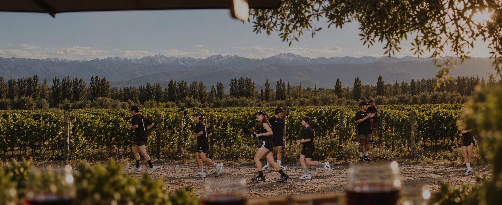
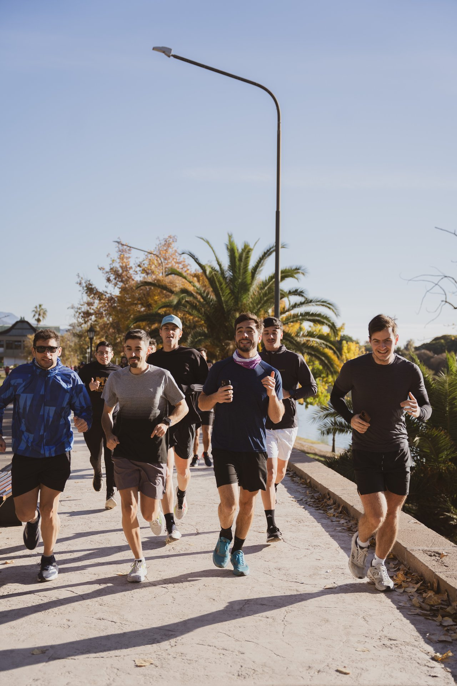

Corré entre viñedos, sunset post-run y degustación.
Run & Wine es la primera experiencia de Sprinters y Bodega Lamadrid que une running, vino y atardecer en un mismo plan. El sábado 14 de noviembre corremos entre los viñedos de la bodega, en Las Compuertas, Luján de Cuyo.
Después del run nos quedamos a brindar con una degustación de vinos Lamadrid y sunset. Seguimos con la gastronomía de Los Bocheros y DJ hasta las 23 h.
No hace falta ser corredor: hay distancias para todos los ritmos y nadie corre solo. Venís a moverte, a conocer gente, a vivir la bodega de una forma distinta y obviamente a sumarte a un sunset increíble para cerrar tu sábado.

Las Compuertas, Luján de Cuyo, Mendoza.
Hay estacionamiento afuera de la bodega.
Ver en Google MapsNinguna entrada incluye gastronomía. Los Bocheros se paga en el lugar según consumo.